Il faut savoir que pour atteindre le sommet du Teide, il est nécessaire de se procurer un permis auprès des autorités locales. Ce permis donne l’accès aux derniers 300m avant le sommet, avant cela le chemin est libre. En nous renseignant, nous nous rendons compte que les autorités ont déjà délivré le quota de permis pour cette année et qu’il faut attendre 2025 pour s’en procurer un. Cependant, nous avons lu que l’ascension n’est contrôlée qu’à partir de 9h et qu’avant cette heure l’accès est libre.
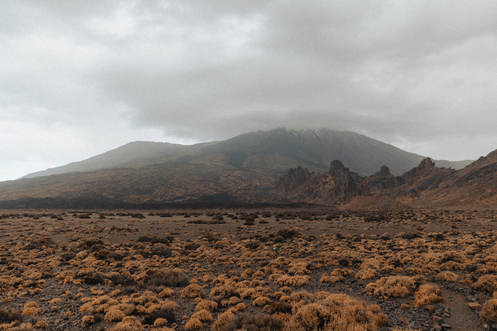
Nous avons donc décidé de grimper dans la nuit pour atteindre le sommet au lever du jour et être redescendu avant 9h. Pour cela, il nous a fallu trouver une voiture de location afin de rejoindre le début de la randonnée en milieu de nuit.
Je m’en vais donc en bus avec Loann à l’aéroport de Santa Cruz où se trouve le loueur. Nous retournons au port où nous préparons scrupuleusement nos affaires pour se protéger du froid en altitude et pouvoir nous nourrir.
Nous allons nous coucher à 21h15.
On se réveille à 00h30, la nuit, ou plutôt la sieste, a été de courte durée.
Nous marchons jusqu’au parking et nous nous mettons en route vers le massif du Teide.
Le ciel est clair, il y a déjà du vent et nous remarquons que des précipitations et quelques orages se forment sur d’autres îles voisines. Tenerife a l’air d’être épargnée pour l’instant.
Nous prenons de l’altitude, la route atteint bientôt les 2000m. Les arbres disparaissent, laissant place à des paysages de désert volcanique que nous devinons dans la nuit grâce à la lumière de la pleine lune.
Nous n’avons croisé aucune voiture pour le moment sur cette route de haute altitude.
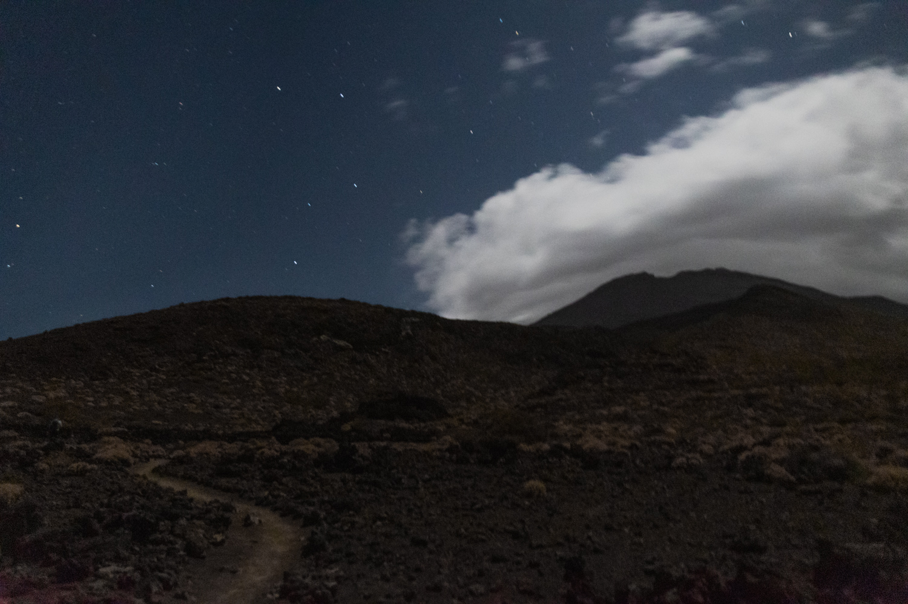
Après 1h30 de route, nous atteignons le parking du début de randonnée. Des gardiens du parc national du Teide nous arrêtent pour nous prévenir que le chemin est fermé jusqu’à nouvel ordre en raison des mauvaises conditions météo.
En effet, il y avait de la neige et de la glace à l’approche du sommet.
On se regarde tous les trois dans la voiture, frustrés de ne pas pouvoir continuer cette aventure. On se demande que faire maintenant que nous sommes à 2500m d’altitude avec une voiture de location à 2h30 du matin.
J’avais repéré la veille qu’un autre chemin menait au sommet par la face sud en passant par un sommet intermédiaire à 3100m, le Pico Viejo. On décide donc de tenter cette option. Nous faisons 15min de voiture à travers des paysages complètement hors du commun qui se dessinent avec la pleine lune. Nous arrivons au parking, aucun garde n’est présent, les conditions sont bonnes et le chemin est praticable sans problème.
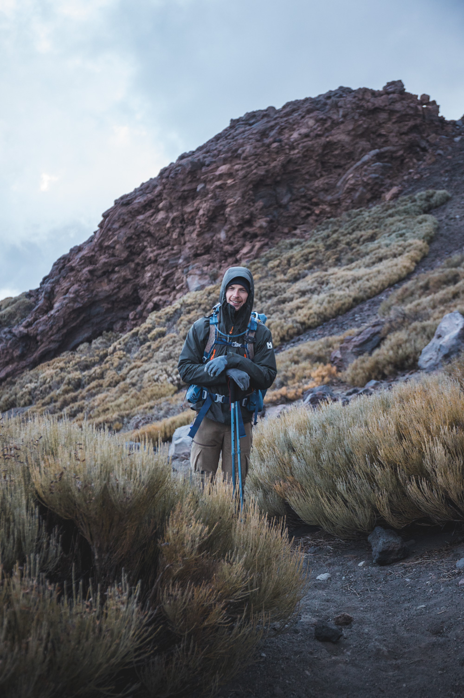
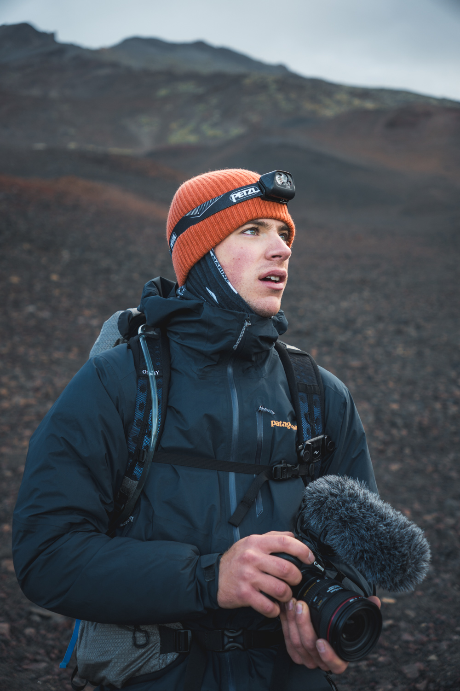
Nous partons donc avec en tête que nous n’irons pas au sommet du Teide car les conditions climatiques sont très incertaines mais on n’exclût pas l’éventualité de rejoindre le Pico Viejo.
Nous mangeons un peu dans la voiture, on s’habille pour le froid, il fait seulement 8°C dehors. Nous fermons nos sacs à dos et nous voilà partis sur le sentier de randonnée, il est 2h50.
Nous faisons les premiers pas éclairés par nos frontales. Très rapidement nous nous rendons compte que la lune à elle seule fournit assez de lumière pour que l’on puisse distinguer les obstacles sur le chemin.
Nous commençons par marcher à travers une forêt de conifères, le sol est en terre et le chemin bien indiqué. Au bout de 30min, les arbres disparaissent et le paysage change. La pierre volcanique fait son apparition sur le bord du chemin, seules quelques broussailles peuplent les étendues qui nous entourent. Nous passons un col et nous voilà dans un immense cratère, une sorte de vallée avec une vue directe sur le sommet du Teide.
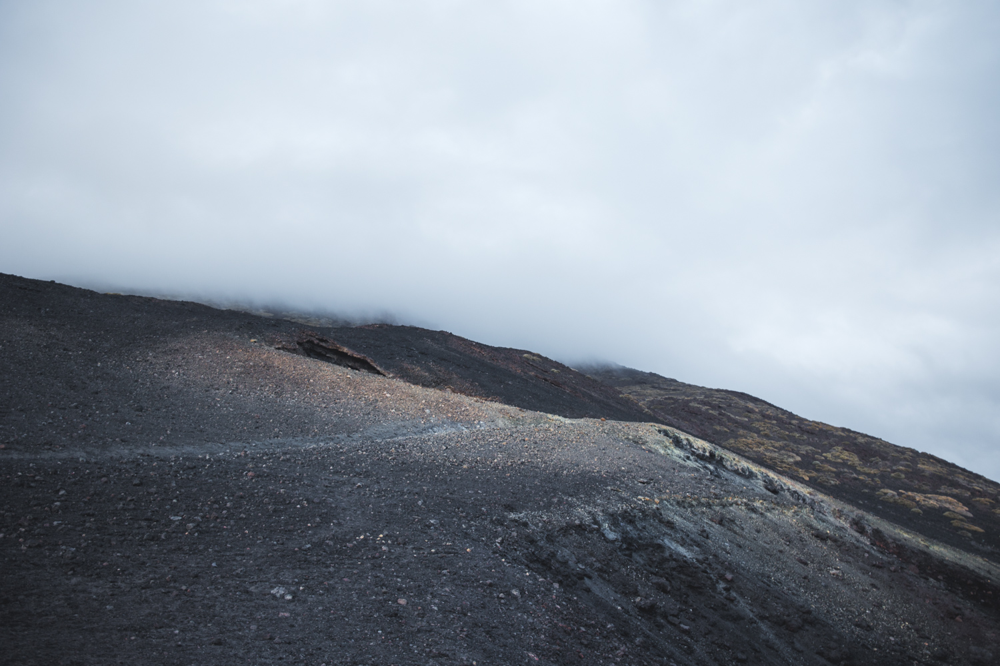
Nous remarquons que le sommet du Pico Viejo est aussi dans les nuages. Notre avancée est stoppée par la vision de quelques éclairs au loin dans le ciel. Depuis le départ, nous prenons l’habitude de regarder toutes les demi-heures les radars d’orages sur l’application Windy. De gros grains et quelques éclairs sont effectivement présents au sud de l’île mais leur trajectoire les pousse vers l’île voisine de Gran Canaria. Nous devrions échapper à ces gros nuages noirs. Nous poursuivons alors notre ascension. Le paysage est de plus en plus aride, la fatigue et la haute altitude commencent à se faire sentir. Nous buvons beaucoup et mangeons quelques barres de céréales en marchant.
Nous sortons le téléphone pour un nouveau point radar quand un éclair plus proche que d’habitude nous alerte. Les nuages ont changé de direction, le radar montre une cellule en gestation. On se regarde et on prend la décision de redescendre.
Sur le retour, le ciel se dégage et les nuages qui nous inquiétaient se sont dissipés. Sur les radars la situation semble rester stable et les nuages évoluent toujours dans la même direction. Nous pensions que le vent avait tourné mais nous nous sommes rendu compte que cela était dû à un effet de site lié à la montagne qui nous entoure.
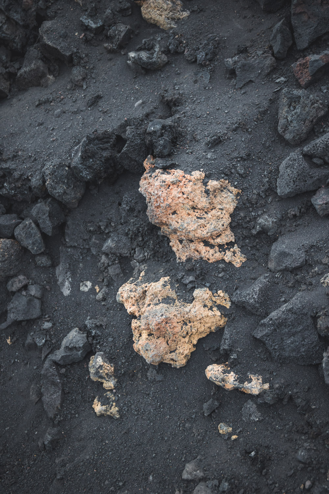
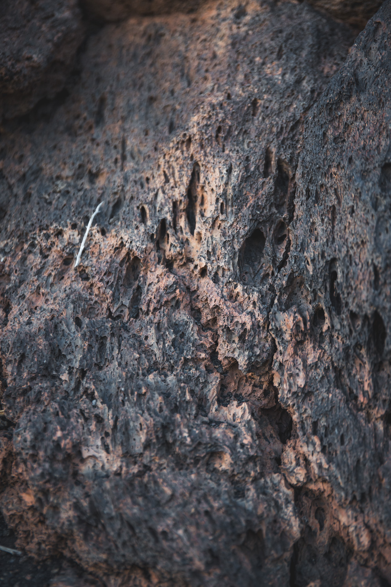
La décision est difficile mais les voyants sont au vert pour remonter. Nous n’avions descendu que quelques centaines de mètres. Nous faisons donc demi-tour et sommes motivés à monter jusqu’à la limite basse des nuages qui surplombent le sommet.
Nous poursuivons l’ascension, le froid nous gagne et nous sommes obligés de rajouter des couches et d’enfiler les gants. Le sol devient de plus en plus meuble, nous marchons sur du sable volcanique. Nous approchons du sommet mais des nuages aussi. Le jour ne va pas tarder à se lever, la vue est obstruée par les nuages, la fatigue nous rattrape, il nous reste 100m de dénivelé pour arriver au sommet mais cela ne vaut pas le coup.
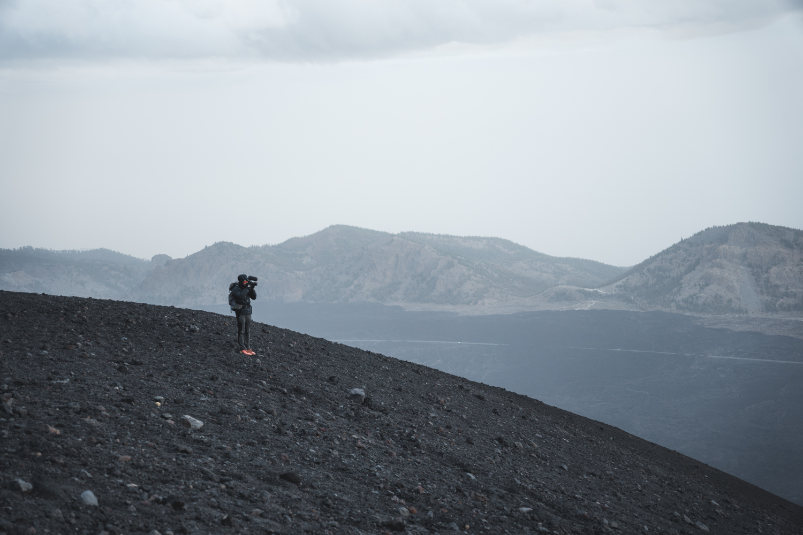
Nous décidons de nous arrêter dans la pente, sur le sentier. Nous mangerons un sandwich en attendant les premières lueurs. Quand le jour se lève, nous entamons la descente. La déception de ne pas voir de lever de soleil et de ne pas atteindre le sommet se lit sur nos visages. Heureusement, les paysages que nous avions traversés à l’aller, de nuit, vont se révéler être d’une grande beauté et nous redonner le sourire !
La descente est très agréable, le chemin est très roulant et meuble. Nos genoux ne souffrent pas trop. La partie haute du chemin laisse place à un vrai paysage volcanique avec du sable noir. Nous sommes aux anges pour faire des photos ! La vue sur les montagnes en contrebas et la mer en arrière-plan nous laisse sans voix.
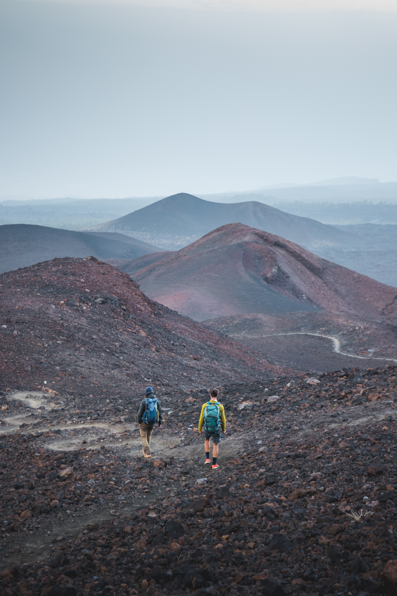
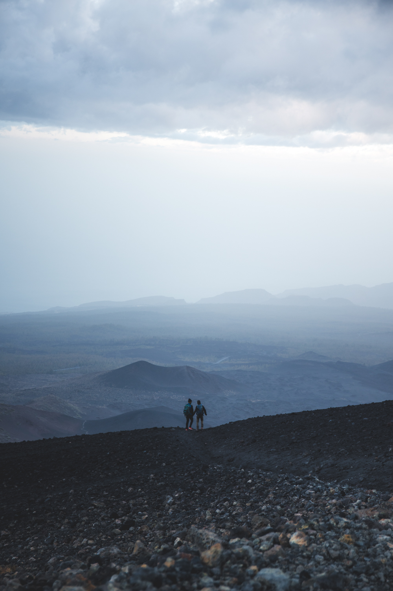
Ce sont des paysages que nous ne connaissions pas auparavant. Des paysages noirs, ocres, rouge, orange. Le vert est quasiment absent de la palette.
En descendant, nous sommes moins attentifs à la météo. Nous voyons apparaître au loin une grande cellule orageuse qui se dirige vers nous. Nous ne sommes qu’à la moitié de la descente mais nous avons l’impression d’être à 10min du parking. On ne se presse pas, nous profitons des paysages pour faire des images.
Les éclairs et tonnerre se rapprochent. Nous pressons le pas. Cela ne suffira pas car les premières gouttes nous rattrapent alors qu’il nous reste encore plusieurs minutes de marche. Les gouttes d’eau se révèlent être de la grêle à cette altitude. Le phénomène s’accélère, on enfile un coupe-vent et on court jusqu’à la voiture. Nous voyons les éclairs frapper les montagnes alentour. Nous sommes trempés mais apercevons enfin la voiture.
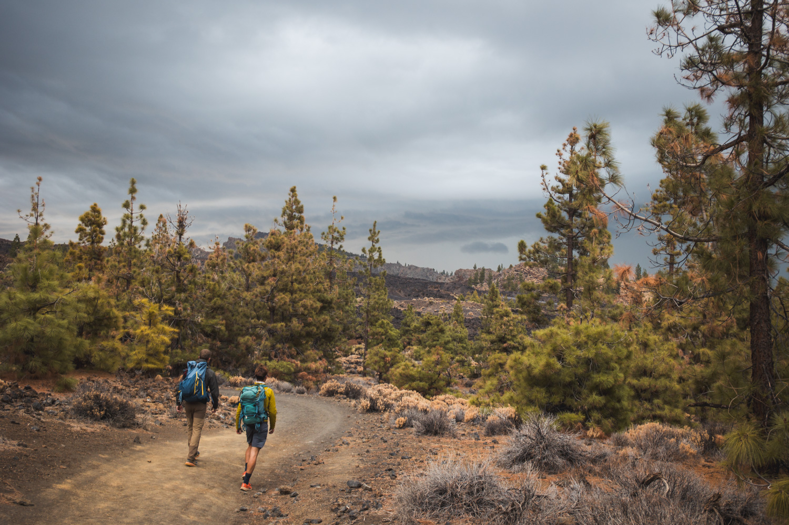
Nous rejoignons la voiture in extremis, trempés jusqu’au caleçon. On se change dans la voiture avec des vêtements secs. Il est 10h, on s’endort tous les trois sur le parking, exténués de cette aventure mais avec des images plein la tête !
Finalement nous reprenons la route pour aller rendre la voiture chez le loueur. Les paysages du retour sont magnifiques. Nous sommes heureux d’avoir saisi cette occasion d’aller visiter l’île de l’intérieur même si le plan de base ne s’est pas déroulé comme prévu. Teide, nous reviendrons un jour jusqu’à ton sommet !